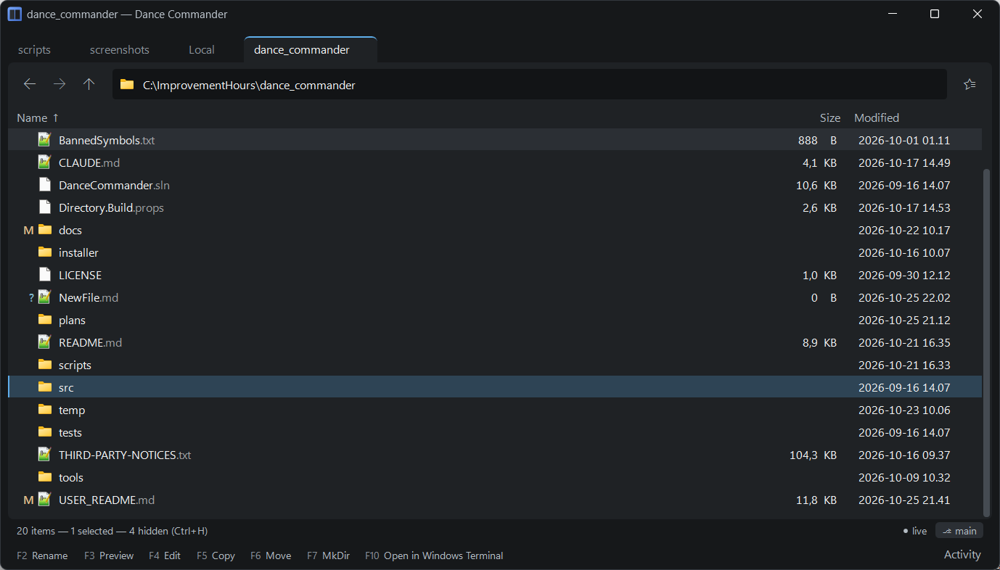
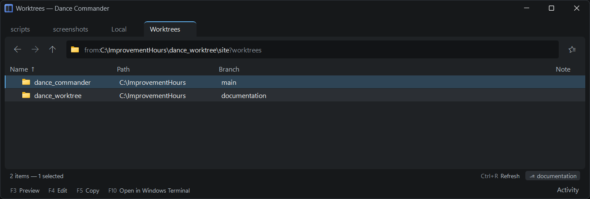

Git
Dance Commander shows you what git thinks, everywhere you look, and leaves committing to whatever you already commit with: the command line, a terminal, or a git client it can open for you. All of it is for repositories on this machine; one on an SFTP server shows no branch or letters.
The branch
Inside a repository, the pane's footer shows the branch, or detached abc1234. In a
folder full of repositories, each one's row carries its branch, so you can see them all at once.
A bookmark that points into a repository shows its branch too, and so does the head of the menu.
Switch branch in a terminal and the footer follows straight away.
Changed files
Files git considers changed carry git's own letter in git's own colour, beside the icon:
M | Modified |
A | Added |
D | Deleted |
R | Renamed |
? | Untracked |
! | Conflicted |
A folder with a changed file anywhere below it is marked too, so you can follow the letters down to what changed. Unchanged and ignored files get no letter, so the few that matter stand out.
The rows appear first and the letters a moment later, so a large repository never holds up the
listing. When something in the repository changes, git is asked again, and the letters it gave
last time stay up until it answers. A repository so large that git status takes more
than ten seconds goes without letters.
Dance Commander runs git status with --no-optional-locks, so it never
takes git's index lock and can't be the reason a commit in your terminal fails. It needs
git on the PATH; without it, the branch still shows.

Git commands
Inside a repository, the menus and the palette offer read-only git commands. Their output opens in the pane:
- For the folder: Git status, Git log.
- For a file: Git diff, Git log for this, Git blame.
Staging and committing are deliberately left out.
Your git programs
When they are installed, a few programs bring git tools of their own (see tools that come with your programs):
- Fork and GitKraken: Open repository in Fork or in GitKraken, from any folder inside it.
- VS Code: Open repository in VS Code.
- Beyond Compare: Git diff in Beyond Compare compares the whole working tree with HEAD, staged or not, and Git diff for this the marked files. Both run as jobs, since git waits until you close the comparison.
- Beyond Compare again, only while git reports a merge conflict:
Resolve conflicts for the repository and Resolve this conflict on a conflicted
file. They run
git mergetoolin a console, because it asks questions, and keep a.origbackup of each file whatever your git config says.
Worktrees
Worktrees (in the folder's menu, inside a repository) lists every worktree of
the repository with its branch. Because the list comes from git worktree list each
time, it stays current as worktrees come and go: useful when several checkouts of one repository
are being worked on side by side. A worktree that no longer exists is shown as not found
rather than dropped.
A listing like this can be your own. Files git remembers is an example script that lists the files deleted below a folder, with the commit that removed each, and copies one back out.

Repository-aware tools
Your own tools can use ${repoRoot}, ${branch} and
${remoteUrl}, which have the same value from anywhere inside the repository, and can
be offered only inside a repository ("inRepository": true), only in repositories whose
remote matches a pattern ("remoteMatches": "*/orbit.git"), or only while there is a
merge conflict to resolve ("inConflict": true). A tool that needs
${branch} isn't offered while HEAD is detached, nor one that needs
${remoteUrl} in a repository without a remote. ${remoteUrl} is the
branch's upstream remote, else origin, and a linked worktree shares it with its main
repository. See Tools and the command line.